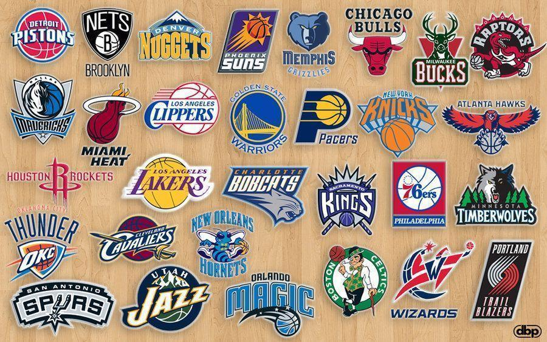

In this project, we predicted how many wins each NBA team would have from the All-Star break through the end of the 2021-2022 season. Python and the requests package were used to web scrape all data using the NBA stats API. Then, we built a partial least squares regression model to make predictions which were evaluated at the end of the season for accuracy and compared to projections made by basketball-reference.


A statistical analysis of a CDC dataset related to adverse events reported from administered Covid-19 vaccines. Methodologies used in this project include correlational testing, T-test comparison, and classification of patients based on severity of adverse events experienced. Tools used: MySQL, Python, Tableau
I collected application and interview process data on 130+ summer internships I applied to. Then, I created an interactive dashboard using R Shiny and other R packages (ggplot, dplyr, plotly). With this tool, I'm able to compare different resume strategies and improve my job search.
This machine learning focused project utilized three regression methods, linear regression, random forest and support vector regressor, to best predict the sale price of a used car. All data cleaning, EDA, and modeling was done in R and R Markdown was used to format and produce the report.

Here is a link to my Tableau Public. The College Football Playoff dashboard shows relevant data from the 2022 NCAAF championship weekend (Georgia vs. Alabama). I helped collect survey data for the Economic Impact Analysis through IUPUI Sports Innovation Institute and aggregate measures from that analysis are shown.